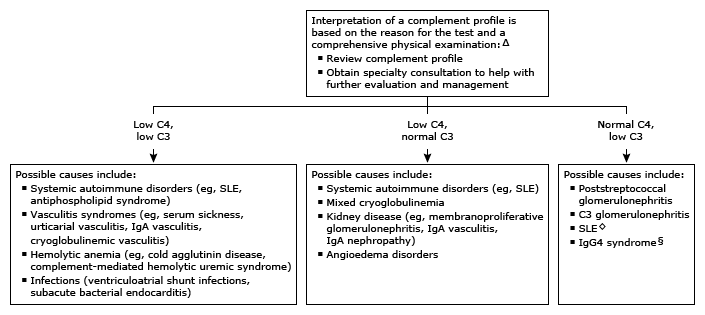

Initial evaluation of low C4 and/or C3 in adults*¶

This algorithm is intended for use with additional UpToDate content on complement disorders.
C4: complement component 4; C3: complement component 3; SLE: systemic lupus erythematosus; IgA: immunoglobulin A; IgG4: immunoglobulin G4; IgG: immunoglobulin G. * The "normal" reference range for C3 is 80 to 160 mg/dL and for C4 approximately 16 to 48 mg/dL. The reference ranges for C3 and C4 vary among laboratories. Interpretation of a specific abnormal result should be based upon the reference range reported with that result. ¶ This algorithm applies to acquired disorders, which are more common than inherited deficiencies. In acquired disease, reductions in complement are usually only partial and affect several complement components at once. In contrast, a persistent absence of a single complement component suggests a rare inherited deficiency. Most individuals with a partial C4 or C3 genetic deficiency (eg, borderline or reduced to one-half the normal level) are asymptomatic. Δ Low C4 and/or C3 is usually due to autoimmune disease. ◊ In a small percentage of lupus patients (<5%), the autoantibody profile leads to predominant alternative pathway activation. § IgG subclasses 1 and 3, but not 2 and 4, can activate the classical pathway. Antibodies in the IgG4 syndrome may engage the alternative pathway and become a marker of disease activity (approximately 20% of patients have this pattern).